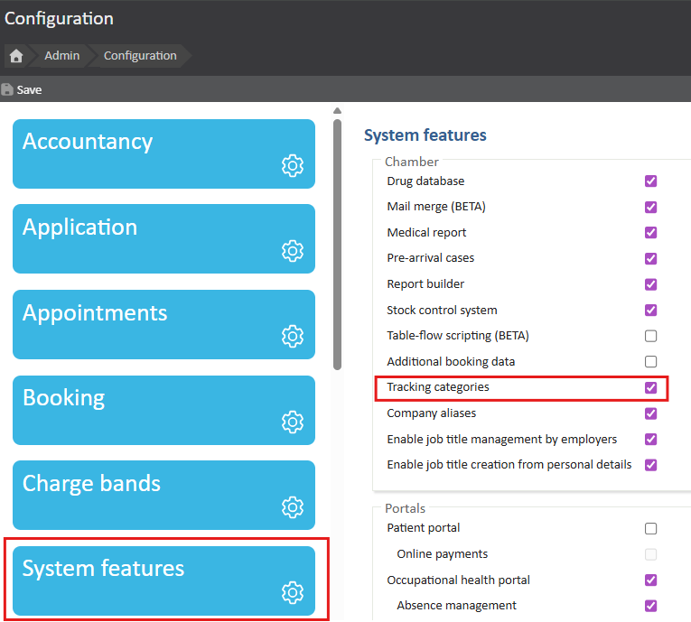
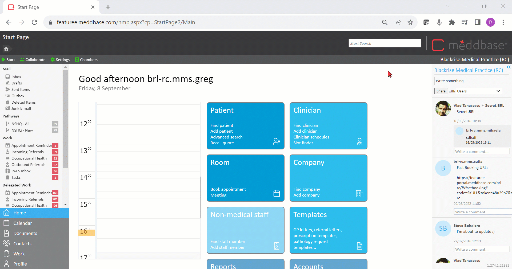
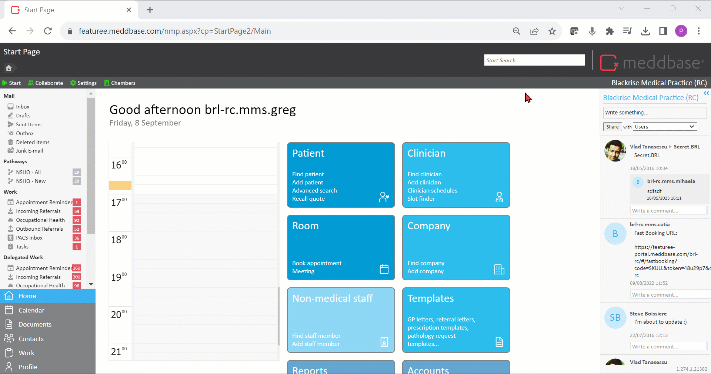
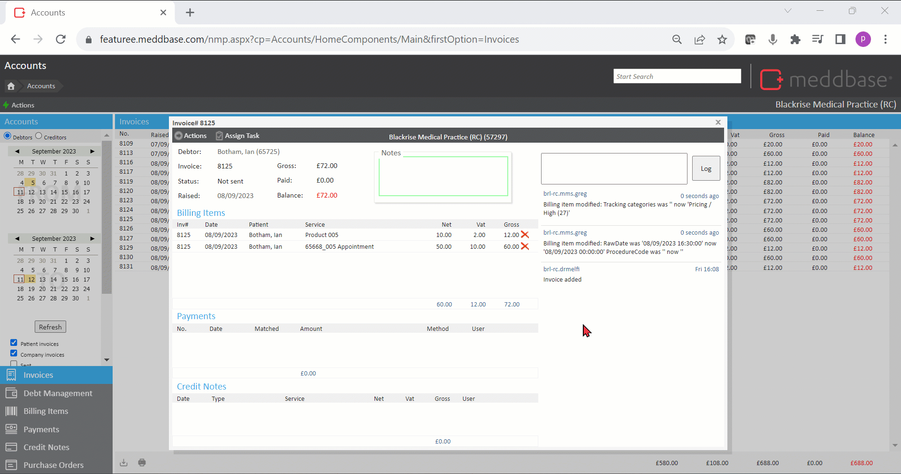
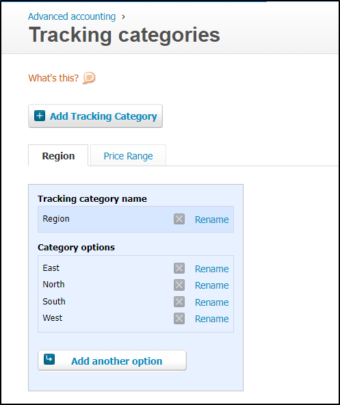
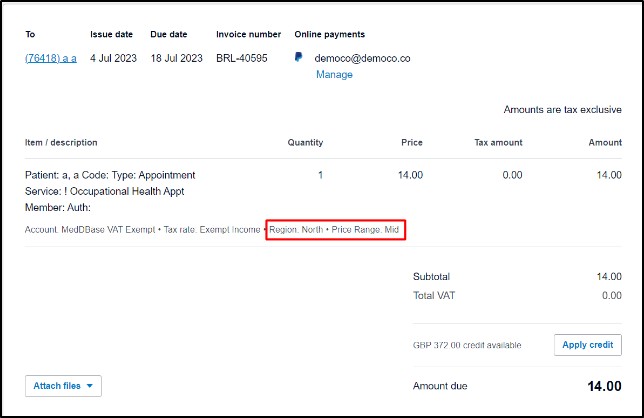

Xero’s online accounting software connects small business owners with their numbers, their bank, and advisors anytime.
This article will walk you through the setup and functionality of the Tracking Categories feature. The following topics will be covered:
Click here for a full list of the actions you can take on an invoice in Meddbase.
Click here for an article on generating invoice, marking as 'sent', making payment.
Click here for an article on raising a credit note and short falling an invoice.
Click here for an article on refunding payment.
Tracking categories is a feature in Meddbase that supports an integration with tracking categories within Xero.
It can also be used as a standalone feature that gives Meddbase users a useful way to categorise and sub-categorise (Parent and Child categories) certain entities, for example, Sites, Location, Appointment Types, and report on them, allowing for segmenting and aggregating data by categories.
For example, a category, Region, is created. The Region category has a few configured options (sub-categories) that can be set for it such as North, South, etc.
The above setup can be used to categorise sites and locations by Region, resulting in billing items created in appointments at a given site/location to inherit the given Region value. This allows you to create reports that aggregate items/invoices by region, or segment the information, for example, the sum of only the invoices in the North region.
To enable Tracking Categories in your Meddbase chamber:

To create Tracking Categories:
Child Categories withing the Parent Category can be created in a Tree Structure, meaning subsequent Child Categories can be created within a Parent Category. When linking categories to entities, e.g. Sites, you select a Child Category, not the Parent Category.
The ability to link Tracking Categories to entities allows the system to automatically track these categories based on the specific context,
For example:
To link Tracking Category to Sites:
You may select only a single value (Child Category) per Parent Category. If you have selected a value for every Parent category then clicking the Add button will just show that you have no other values left to select.
To link Tracking Categories to Locations created for your Sites:
To link Tracking Categories to Appointment Types:

To link Tracking Categories to Services:

To link Tracking Categories to Clinicians:
To link Tracking Categories to Patients:
Typically, Billing items are generated from a Service, e.g. Consultation, and are therefore linked to that Service.
Furthermore, most billing items are also generated from an invoice created from an appointment. If this is the case and the billing item is on an invoice linked to an appointment then the following information can be extracted from the appointment:
Every entity, e.g. Site, can only have 1 value per Parent category selected, e.g. Region/North (you cannot add another value from the Region parent category for this entity, e.g. Region / South).
However, another entity, e.g. Location, can have a different value from the same Parent category, e.g. Region/Nort West.
If a billing item is generated from an appointment, that took place at the above Site and Location, 2 values from the same tracking category would be available:
In such cases the system will prioritise values based on the entity the value is linked to. The priority is as follows:
This means that whenever a billing item is generated in a context, e.g. from an appointment, where different entities the billing item is associated to, e.g. Site, Location, Appointment Type etc. have linked values from the same Tracking category, the system will use the value linked to the highest priority entity.
When a Billing Item is generated and the status of the Invoice remains Not sent, you can manually add Tracking categories to the billing item (if no entities it is associated to had Tracking categories).
You can also modify currently added Tracking categories:

Whilst you can define multiple Tracking categories and multiple entities can have respective Tracking categories linked in Meddbase, the Xero integration only allows up to 2 Tracking categories (Parent categories) to be active and sent.
To select the Parent tracking categories to be sent to Xero:
The same Parent category cannot be used for both Xero tracking categories.
To configure tracking categories in Xero:
On this page you can now set create, edit and delete tracking categories and modify the options within them as necessary.

Once configuration is complete, so:
You can start using Tracking categories to send relevant information to Xero regarding Billing Items generated in a context, e.g. from an Appointment.
When an invoice is marked as Sent in Meddbase, this creates the invoice in Xero.
Each Billing Item in Meddbase is converted to a relevant line item in Xero.
The integration will check the Billing Item and all Tracking category values set on it, it will check the 2 active Parent categories to be sent (Xero Tracking category 1 and Tracking category 2) and if the Billing Item has a value for either of these Parent categories, then that value will be sent as a tracking category value for the line item.
In Xero, you can find the relevant created invoice, and in each line item row there is a set of grey text along the bottom listing certain properties of the lined item, such as the Account and the Tax Rate.
Here is where any tracking category values set will be listed too.
For example when a Billing Item is attached to an invoice in Meddbase. It has 2 Tracking categories (both shown as Parent name / Child name):
Marking the invoice as Sent, will create the invoice in Xero.
If both the Region and Price Range tracking categories are correctly configured in Xero, you can see the tracking categories sent across correctly into the relevant Xero line item with the values of North and Mid respectively, as below:
